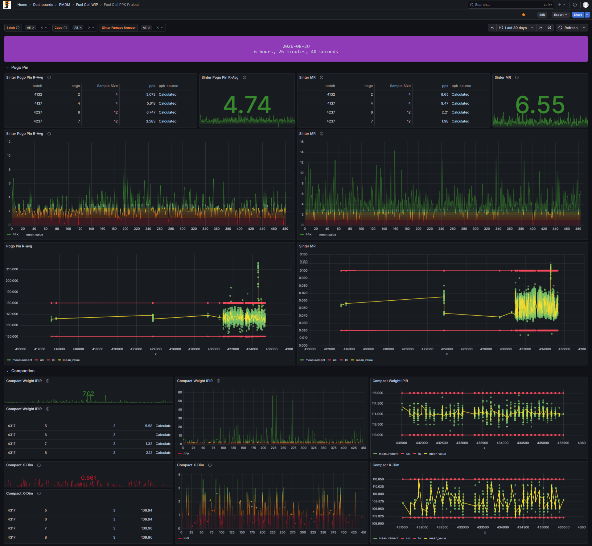
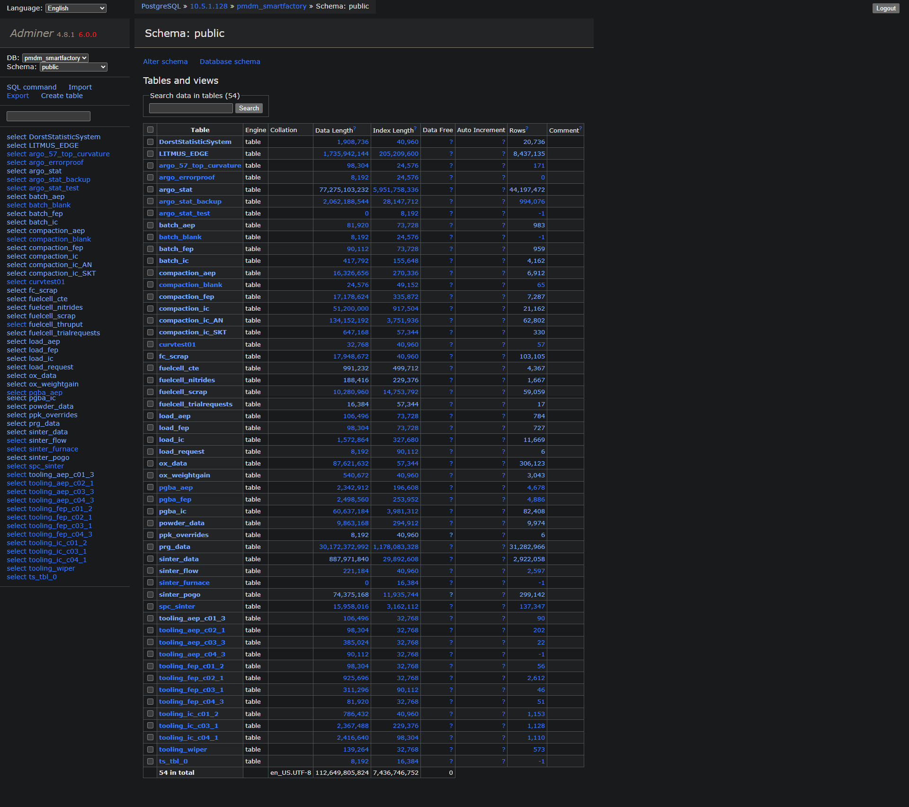
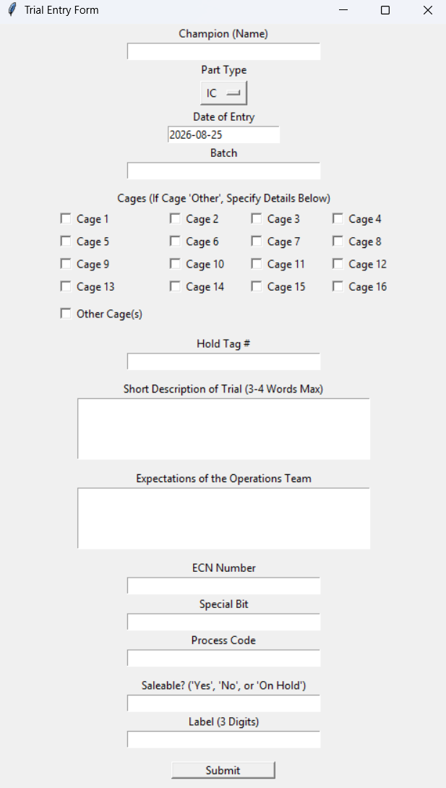

Software and Quality Engineer
Highlights
- Developed manufacturing and quality dashboards using Grafana and SQL Database.
- Built automated data pipelines using Python, Excel/VBA, and PostgreSQL across multiple floor machines and production lines.
- Conducted trials and root cause analysis for quality improvement on a daily basis; one notable success was coming to the realization that ceramic curvature and orientation was a major contributor to part warpage, which led to a reduction in overall scrap rates by 2-3% and saved $100,000 annually.
- Inspected microstructures of materials to ensure quality standards.
- Simultaneusly learned about a real manufacturing environment and typical quality control processes and dealing with customer issues.
High Level Projects
Fuel Cell PPK Project
Dashboards tracking process performance (PPK) across fuel cell production lines.
Fuel Cell Scrap Dashboard
Live dashboard showing reject counts, cost breakdown, and scrap rate, displayed on the production floor.
Furnace Data Collection
Installed and set up sensors to monitor sinter and oxidation furnace flow rates.
Technologies
Gallery







Company Overview
Johnson Electric is a global manufacturer of motion subsystems and components for automotive, industrial, and consumer electronics. The Mississauga location focuses on manufacturing SOFC (Solid Oxide Fuel Cell) plates, which are sold to companies that build SOFC stacks for fuel cell applications.